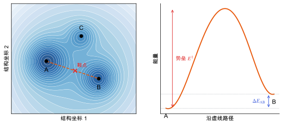

能量景观与多晶型
同一分子可以有许多能量接近的晶体结构，能量景观的形状决定了预测和合成的难度。
直观阅读需要
- 势能面：能量作为原子坐标的函数
- 数值优化：局部极小
只是提示，不需要先读完才能往下看。
直觉直观解释
把晶体的能量看成所有结构自由度（晶胞参数、分子位置、分子取向、构象）的函数，这个高维函数就是能量景观 (energy landscape)。
- 局部极小 (local minimum)：任何小扰动都会让能量升高，对应一个可能存在的晶体结构。
- 鞍点 (saddle point)：沿一个方向是极大，其他方向是极小，对应两个结构之间转变的“山口”。
- 盆地 (basin)：从某个极小出发，所有沿最速下降会落到这个极小的结构构成它的盆地。
同一个分子可以结晶成不同的结构，这叫多晶型 (polymorphism)。在能量景观上，多晶型就是多个能量接近的极小。分子晶体的特点是：极小非常多，而且相互之间的能量差很小，常常与计算方法的误差同一量级 [Price 2014]。
哪个结构真正出现，不仅取决于能量（热力学），也取决于结晶过程中先到达哪个盆地（动力学）。

| 符号 | 是什么 | 图里对应 |
|---|---|---|
| A、B、C | 局部极小（候选多晶型） | 左图黑点 |
| 鞍点 | 路径上的能量最高点 | 左图红叉 |
| E^{\ddagger} | 从 A 到 B 的势垒 | 右图红色双箭头 |
| \Delta E_{\mathrm{AB}} | 两个极小的能量差 | 右图蓝色双箭头 |
| 虚线 | 一条连接 A 和 B 的路径（示意，不一定是最低能路径） | 左图橙色虚线 |
定义与公式数学与推导
对原子坐标而言，H 就是力常数矩阵，所以结构是不是极小，可以由 Γ 点声子有没有虚频来检查（见 声子与晶格动力学）。
热力学与动力学
- 热力学稳定：在给定温度和压力下自由能最低（见 自由能与熵）。
- 亚稳：不是最低，但势垒足够高，在实验时间尺度内不转变。很多实际得到的多晶型是亚稳的。
两个多晶型的稳定性顺序可以随温度改变。在某个转变温度以下 A 稳定、以上 B 稳定，叫互变 (enantiotropic)；在所有温度下都是同一个更稳定，叫单变 (monotropic) [Cruz-Cabeza et al. 2015]。
过度预测
计算出的能量景观里，低能极小往往比实验中观察到的多晶型多得多，这叫过度预测 (overprediction)。原因可能是：一些计算极小在有限温度下会合并（势垒很低，热运动会越过）；一些在动力学上难以结晶；也可能是能量模型有误差 [Price 2014]。
在本研究线里的样子对应与边界
- CSP 的本质就是在能量景观上找低能极小（见 晶体结构预测：搜索与排序）。搜索是否完备、排序是否可靠，是两个独立的问题。
- β-甘氨酸是亚稳多晶型：它能压电（非中心对称），但不是最稳定的形式（见上面的待核验块）。研究它的压电性时，结构稳定性要靠动力学，而不是能量最低。
- 找到的极小要去重：同一个极小可能被搜索算法从不同起点找到很多次（见 晶体结构相似度与去重）。
- 能量差和方法误差的比较：如果两个候选结构的 PBE-D3 能量差小于泛函和色散的典型误差，排序就不可信，要用更高层次的方法或自由能检查（见 预测的误差来自哪里）。
常见坑对应与边界
检验自己对应与边界
子条目
- 晶体结构相似度与去重怎样判断两个分子晶体结构是不是同一个：比较分子位置与取向、粉末图谱或指纹的几类做法，它们决定 CSP 结构池怎么去重，也决定生成模型的“唯一性、新颖性”怎么算。
- 晶体结构预测：搜索与排序随机或准随机搜索、分层排序与能量模型的选择：CSP 流程中每一步解决什么、引入什么误差。
参考资料
教材Wales 2003
D. J. Wales, Energy Landscapes, Cambridge University Press (2003)
尚未实际查阅，目前只是拟查阅书目
论文Price 2014
S. L. Price, Predicting crystal structures of organic compounds, Chem. Soc. Rev. 43, 2098 (2014)
尚未实际查阅，目前只是拟查阅书目
论文Cruz-Cabeza et al. 2015
尚未实际查阅，目前只是拟查阅书目
分类统计力学与采样 · 概念 · 研究线：结构预测与能量景观 · 状态：草稿